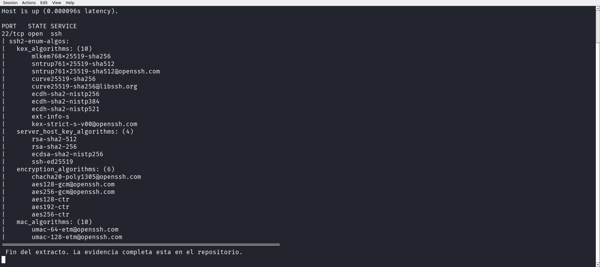
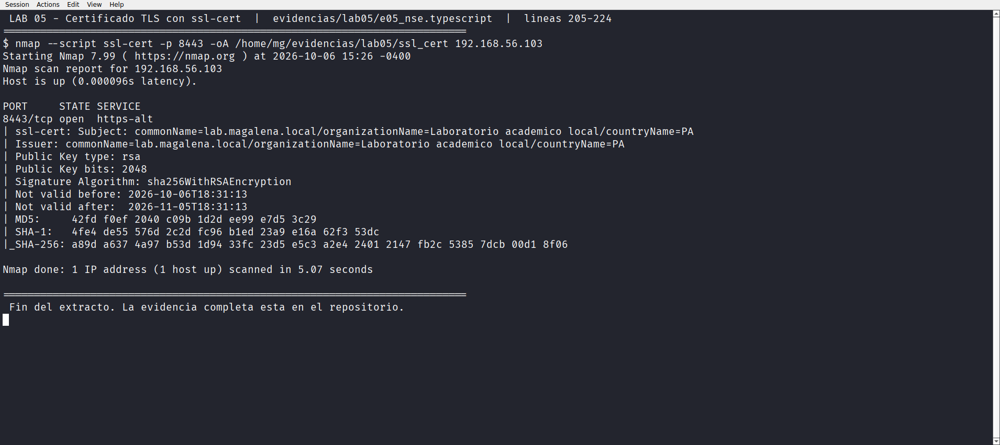
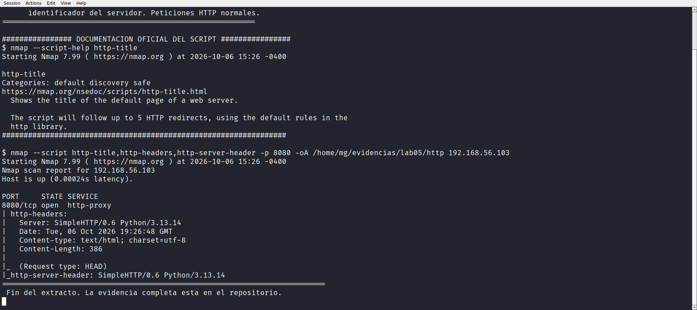
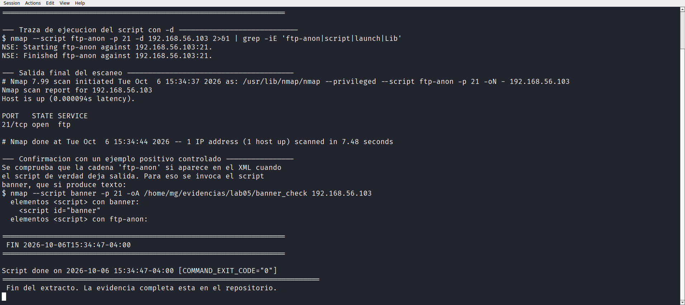

Laboratorio 05 de 06 · Estado completado
Scripts NSE y verificación de ejecución
Nmap trae 612 scripts de enumeración. Este laboratorio usa cuatro de ellos contra el objetivo autorizado y resuelve la pregunta que casi siempre se salta, cómo saber que un script se ejecutó de verdad cuando la salida en pantalla está vacía.
1. Resumen para una persona de selección
Los scripts de enumeración son la parte de Nmap que va más allá de abrir y cerrar puertos. Este laboratorio los usó contra los cuatro puertos abiertos y obtuvo información útil de los tres principales, algoritmos de intercambio de claves SSH, propiedades del certificado TLS y cabeceras del servidor HTTP.
La mitad más valiosa del trabajo está en el último script. ftp-anon se ejecutó contra el puerto 21 y no devolvió ninguna línea de salida. Antes de concluir nada se comprobaron tres cosas por separado, si el script corrió realmente, si la herramienta es capaz de escribir cuando hay hallazgo, y qué dice el servidor cuando se intenta el acceso anónimo con un cliente distinto. Las tres comprobaciones dieron la misma respuesta, y ese es el resultado del laboratorio.
Laboratorio académico sobre una máquina virtual propia, ejecutado por acceso SSH. Todas las pruebas son de lectura contra 192.168.56.103, la máquina que ejecuta el propio escáner.
2. Objetivo técnico
Enumerar los servicios identificados en el Laboratorio 04 con scripts NSE y establecer un criterio reproducible para distinguir entre un script que no encontró nada y un script que no llegó a ejecutarse.
- Listar los algoritmos que declara el servidor SSH.
- Leer las propiedades del certificado del puerto TLS.
- Extraer título, cabeceras e identificador del servidor HTTP.
- Comprobar acceso anónimo en FTP y validar el resultado con un método independiente.
3. Entorno y alcance
Misma línea base que los laboratorios anteriores. Kali Linux 2026.3 en VirtualBox, Nmap 7.99 con 612 scripts instalados, objetivo autorizado 192.168.56.103.
Único objetivo 192.168.56.103. Los scripts ejecutados pertenecen a las categorías safe, discovery y default, que no modifican el objetivo.
No se ejecutó ningún script de las categorías exploit, dos ni intrusive. No se realizó fuerza bruta contra el acceso anónimo ni contra ninguna credencial.
3.1 Documentación de cada script
Antes de usar un script conviene leer su ficha oficial. La documentación vive en nmap.org/nsedoc/scripts/ y se consulta desde la propia herramienta.
$ nmap --script-help http-title
http-title
Categories: default discovery safe
https://nmap.org/nsedoc/scripts/http-title.html
Shows the title of the default page of a web server.
The script will follow up to 5 HTTP redirects, using the default
rules in the http library.http-title, con sus categorías y su dirección de documentación.4. Conocimientos previos
- Categorías.
safepromete no alterar el objetivo.discoveryrecoge información.defaultson los que se ejecutan cuando no se especifica nada. - Diferencia entre vacío y ausencia de salida. Un script puede no encontrar nada y escribir un mensaje explícito, o puede no encontrar nada y callarse. Las dos situaciones se distinguen mirando el XML.
- Elemento
<script>. Solo aparece en el XML cuando el script deja resultado. Su ausencia es un dato, no un hueco. - Escritura tardía.
--script-args-timeoutno existe en Nmap 7.99. La opción correcta para ajustar tiempos de un script es--script-argscon la clave que declare cada script.
5. Procedimiento reproducible
- Consultar la ficha de cada script con
--script-helpantes de ejecutarlo. - Ejecutar
ssh2-enum-algoscontra el puerto 22. - Ejecutar
ssl-certcontra el puerto 8443. - Ejecutar
http-title,http-headersyhttp-server-headercontra el puerto 8080. - Ejecutar
ftp-anoncontra el puerto 21 con-dpara observar la traza interna. - Contrastar el resultado de
ftp-anoncon un control positivo y con un cliente FTP independiente.
6. Comandos exactos y explicación de sus opciones
$ nmap --script ssh2-enum-algos -p 22 \
-oA /home/mg/evidencias/lab05/ssh_algos 192.168.56.103
$ nmap --script ssl-cert -p 8443 \
-oA /home/mg/evidencias/lab05/ssl_cert 192.168.56.103
$ nmap --script http-title,http-headers,http-server-header -p 8080 \
-oA /home/mg/evidencias/lab05/http 192.168.56.103
$ nmap --script ftp-anon -p 21 \
-oA /home/mg/evidencias/lab05/ftp_anon 192.168.56.103--script acepta nombres separados por coma y también etiquetas de categoría precedidas de =. -p limita la ejecución a un puerto concreto, lo cual acelera mucho la prueba y evita tocar puertos de más. -oA guarda las tres salidas a la vez.$ nmap --script ftp-anon -p 21 -d 192.168.56.103 2>&1 \
| grep -iE 'ftp-anon|script|launch|Lib'
NSE: Starting ftp-anon against 192.168.56.103:21.
NSE: Finished ftp-anon against 192.168.56.103:21.-d activa el detalle del motor NSE. Se filtró la salida con grep porque el debug completo es muy extenso. La pareja Starting y Finished confirma que el script entró y salió normalmente.La primera versión de este procedimiento usaba --script-args-timeout. Esa opción no existe en Nmap 7.99 y la ejecución falló. Se corrigió el guion y se verificó de nuevo, con lo que ftp-anon sí produjo su traza interna. Dejar constancia de la corrección importa más que ocultarla.
7. Resultados observados
7.1 Algoritmos declarados por el servidor SSH
El servidor anuncia diez algoritmos de intercambio de claves, cuatro de clave pública del servidor y seis de cifrado.
| ssh2-enum-algos:
| kex_algorithms: (10)
| mlkem768x25519-sha256
| sntrup761x25519-sha512
| curve25519-sha256
| ecdh-sha2-nistp256
| ecdh-sha2-nistp384
| ecdh-sha2-nistp521
| server_host_key_algorithms: (4)
| rsa-sha2-512
| rsa-sha2-256
| ecdsa-sha2-nistp256
| ssh-ed25519
| encryption_algorithms: (6)
| chacha20-poly1305@openssh.com
| aes128-gcm@openssh.com
| aes256-gcm@openssh.com
| aes128-ctr
| aes192-ctr
| aes256-ctre05_nse.typescript.La presencia de mlkem768x25519-sha256 y de sntrup761x25519-sha512 indica que este OpenSSH está preparado para intercambios resistentes a computación cuántica, y que el algoritmo moderno se anuncia primero, de modo que la negociación lo elige cuando el cliente lo soporta. En la lista de cifrado no aparece ninguno de los algoritmos considerados débiles, no hay cbc ni 3des.

7.2 Propiedades del certificado TLS
El script ssl-cert lee el certificado que entrega el servidor y lo traduce a campos legibles, incluidos los resúmenes criptográficos.
| ssl-cert: Subject: commonName=lab.magalena.local
| organizationName=Laboratorio academico local
| countryName=PA
| Issuer: commonName=lab.magalena.local
| organizationName=Laboratorio academico local
| countryName=PA
| Public Key type: rsa
| Public Key bits: 2048
| Signature Algorithm: sha256WithRSAEncryption
| Not valid before: 2026-10-06T18:31:13
| Not valid after: 2026-11-05T18:31:13
| MD5: 42fd f0ef 2040 c09b 1d2d ee99 e7d5 3c29
| SHA-1: 4fe4 de55 576d 2c2d fc96 b1ed 23a9 e16a
|_SHA-256: a89d a637 4a97 b53d 1d94 33fc 23d5 e5c3Sujeto y emisor coinciden, lo cual confirma que es un certificado autofirmado. La clave es RSA de 2048 bits y la firma usa SHA-256, ambos aceptables. La ventana de validez es de un mes. El resumen SHA-256 es el que permitiría identificar este certificado concreto en futuras comprobaciones.

ssl-cert, incluidos los tres resúmenes criptográficos del certificado.7.3 Cabeceras del servidor HTTP
Tres scripts sobre el mismo puerto, todos dentro de la categoría safe, realizan peticiones HTTP normales.
| http-headers:
| Server: SimpleHTTP/0.6 Python/3.13.14
| Date: Tue, 06 Oct 2026 19:26:48 GMT
| Content-type: text/html; charset=utf-8
| Content-Length: 386
|
|_ (Request type: HEAD)
|_http-server-header: SimpleHTTP/0.6 Python/3.13.14curl en el Laboratorio 04.La coincidencia entre curl y el script NSE es el resultado relevante. Dos herramientas distintas, con implementaciones distintas, informan exactamente lo mismo. Esa redundancia es lo que convierte un dato en un hallazgo defendible.

7.4 El caso de ftp-anon, sin salida aparente
Aquí está el núcleo del laboratorio. El script se ejecutó, la traza interna confirma que entró y salió, pero la salida final no contiene ninguna línea del script.
$ nmap --script ftp-anon -p 21 -d 192.168.56.103
NSE: Starting ftp-anon against 192.168.56.103:21.
NSE: Finished ftp-anon against 192.168.56.103:21.
PORT STATE SERVICE
21/tcp open ftp
# control positivo, script banner sobre el mismo puerto
elementos <script> con banner: <script id="banner"
elementos <script> con ftp-anon: (ninguno)banner, que sí deja elemento <script>.El control positivo resuelve la duda de fondo. El mismo puerto, la misma herramienta y el mismo formato de salida, pero con el script banner el elemento <script> sí aparece. La ausencia en el caso de ftp-anon no puede achacarse a un problema de formato ni a un fallo de escritura.

ftp-anon, salida final y el control positivo con el script banner.7.5 Confirmación con un cliente independiente
Para no depender solo de Nmap se probó el acceso anónimo con curl, que es un cliente FTP sin relación con el motor NSE.
$ curl --user anonymous:anonymous ftp://192.168.56.103:21/
530 Access deniedEl código 530 es la respuesta estándar de FTP para acceso denegado. El acceso anónimo está deshabilitado, que es exactamente lo que el script estaba buscando.
8. Evidencias vinculadas
| Archivo | Contenido |
|---|---|
e05_nse.typescript | Transcripción de los scripts sobre SSH, TLS y HTTP |
e05c_ejecucion_script.typescript | Ejecución de ftp-anon con -d y control positivo |
ssh_algos.nmap y anexos | Salida del script ssh2-enum-algos |
ssl_cert.nmap y anexos | Salida del script ssl-cert |
http.nmap y anexos | Salida de los tres scripts HTTP |
banner_check.nmap | Control positivo usado para verificar la escritura del formato |
| Cuatro archivos PNG | Capturas de pantalla de cada bloque de resultados |
9. Interpretación técnica
Evidencia. El servidor SSH anuncia mlkem768x25519-sha256 como primer algoritmo de intercambio.
Interpretación. El orden de la lista determina la preferencia de negociación. Un cliente moderno elegirá ese algoritmo, resistente a computación cuántica, sin ninguna configuración adicional por parte del administrador.
Evidencia. ftp-anon tiene traza Starting y Finished, y no produce elemento <script>. El control con banner sobre el mismo puerto sí lo produce.
Interpretación. La conclusión correcta es que el script se ejecutó y no encontró acceso anónimo. Un script NSE solo escribe en el XML cuando tiene algo que reportar. El silencio, acompañado de la traza de ejecución, es un resultado negativo válido.
Evidencia. curl --user anonymous:anonymous devuelve 530 Access denied.
Interpretación. La comprobación independiente confirma el resultado del script con una herramienta que no comparte código con el motor NSE. Es la diferencia entre un resultado y un resultado defendible.
Evidencia. La opción --script-args-timeout no existe en Nmap 7.99 y la primera ejecución falló.
Interpretación. Un error de sintaxis en una opción que no existe se parece mucho a un script que no hace nada. Sin verificar la traza interna, habría sido posible escribir en el informe que ftp-anon no encontró acceso anónimo cuando en realidad el comando no había llegado a ejecutarse.
10. Implicación defensiva y recomendaciones
- Enumerar algoritmos es una revisión de configuración. Una lista que incluya
3des-cbcoaes128-cbces un hallazgo. En este equipo no aparece ninguno. - El certificado se audita igual que el servicio. Sujeto, emisor, tamaño de clave, algoritmo de firma y ventanas de validez son campos que conviene citar, no resumir.
- La cabecera
Serverconfirma el hallazgo del Laboratorio 04. Dos fuentes independientes con el mismo dato lo convierten en un hecho verificado. - El acceso anónimo de FTP es una comprobación de configuración, no una explotación. Comprobarlo en un equipo propio es legítimo y útil, y el resultado negativo es tan informativo como el positivo.
- Todo script debe validarse con un control positivo cuando la ausencia de salida puede confundirse con un fallo.
Un resultado sin control es una observación. Un resultado con control es una evidencia. Este laboratorio está construido entero sobre esa diferencia.
11. Errores, limitaciones y puntos pendientes
| # | Incidencia | Impacto | Estado |
|---|---|---|---|
| L1 | La opción --script-args-timeout no existe en Nmap 7.99 |
La primera ejecución de ftp-anon falló sin producir resultado útil |
Corregido y verificado con control |
| L2 | No se ejecutaron scripts de categorías ofensivas | El informe no cubre vulnerabilidades, solo enumeración | Decisión consciente y documentada |
| L3 | La comprobación de acceso anónimo es única y no se repitió | Un resultado en un solo instante no describe el estado permanente del servicio | Pendiente si se retoma el laboratorio |
| L4 | El servidor HTTP no devolvió título, solo cabeceras | El script http-title no aportó información adicional |
Registrado como resultado vacío legítimo |
La incidencia L1 es la más instructiva del portafolio. Documentar un error propio con su corrección y su control demuestra más criterio que presentar solo aciertos.
12. Conclusión
Los cuatro scripts se ejecutaron sobre los puertos previstos. Tres produjeron información útil y el cuarto produjo un resultado negativo verificado.
El hallazgo técnico principal es que el servidor SSH de este equipo anuncia algoritmos resistentes a computación cuántica en primera posición, sin algoritmos débiles en la lista de cifrado. El hallazgo metodológico es más importante. Que un script no escriba nada no significa que no se haya ejecutado, y demostrarlo exige mirar la traza interna y montar un control positivo.
Ese criterio se aplica mucho más allá de Nmap. Toda comprobación automatizada admite la misma pregunta, cómo sé que la herramienta habría informado si hubiera encontrado algo.
13. Preguntas de entrevista sobre esta práctica
- ¿Cómo demuestras que
ftp-anonse ejecutó si no dio salida? Con-daparecen las líneas Starting y Finished, y con un control positivo se comprueba que el formato sí escribe cuando hay hallazgo. - ¿Qué es un control positivo? Una prueba que se espera que funcione, usada para demostrar que el método es capaz de detectar lo que busca.
- ¿Qué significa que el elemento
<script>no aparezca en el XML? Que el script no reportó nada. No que no se haya ejecutado. - ¿Qué indica
mlkem768x25519-sha256en la lista de algoritmos? Que el servidor soporta intercambio de claves resistente a computación cuántica y que lo prefiere por orden. - ¿Por qué el certificado autofirmado no es aquí un hallazgo? Porque es un laboratorio propio y el certificado se generó para él. En un servicio público sí sería relevante.
- ¿Qué error se cometió y cómo se corrigió? Se usó una opción inexistente,
--script-args-timeout. Se detectó al no aparecer la traza, se corrigió y se volvió a verificar con control.
14. Referencias oficiales utilizadas
- Documentación oficial de scripts NSE. nmap.org/nsedoc
- Ficha del script
ftp-anon. nmap.org/nsedoc/scripts/ftp-anon.html - Ficha del script
ssl-cert. nmap.org/nsedoc/scripts/ssl-cert.html - Ficha del script
ssh2-enum-algos. nmap.org/nsedoc/scripts/ssh2-enum-algos.html - Ficha del script
http-headers. nmap.org/nsedoc/scripts/http-headers.html - Guía del motor NSE. nmap.org/book/nse.html
- Documento 959 de FTP, respuestas de estado. rfc-editor.org/info/rfc959
- Documentación de
curl. curl.se/docs/manpage.html